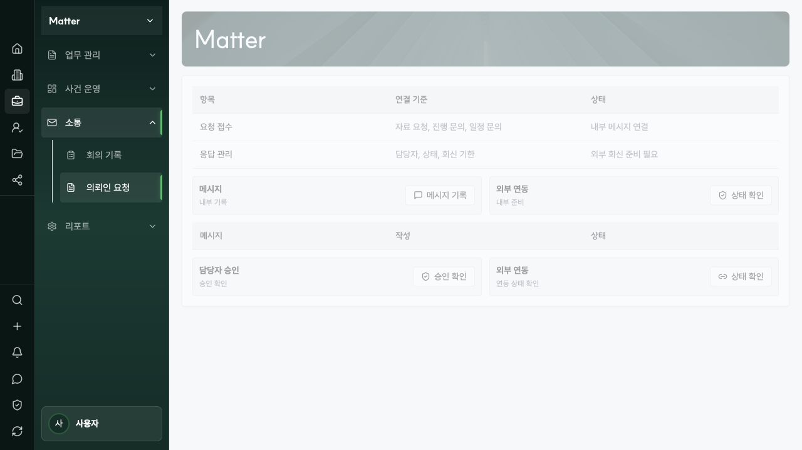
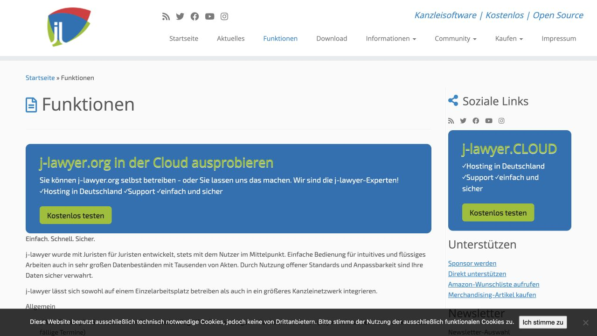
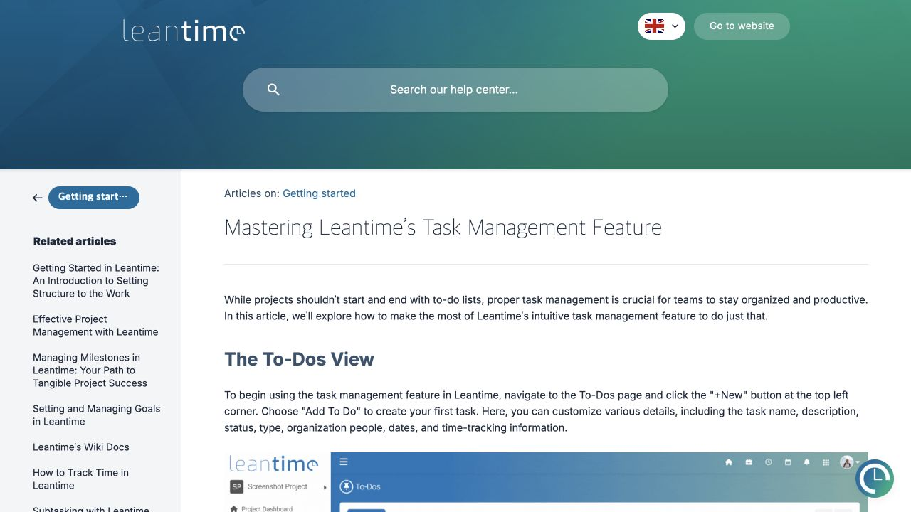
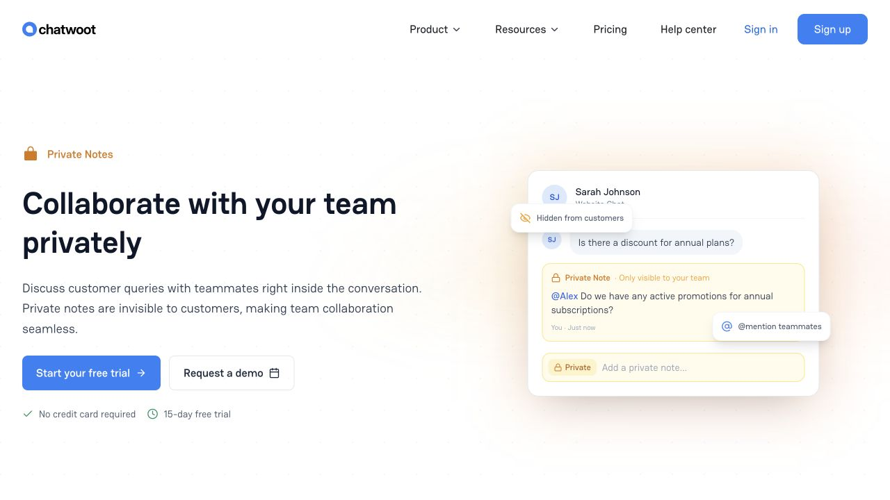
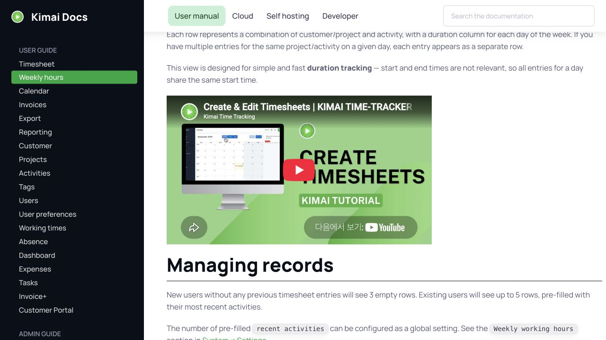

10인 로펌용 Matter 업무 OS
권한 체계나 이해상충 관리가 제품의 중심이 아니라, 열 명이 매일 사건을 놓치지 않고
인수인계하고 시간을 기록해 청구·수금까지 마치는 운영 체계를 중심으로 Matter를 다시 설계했다.
결론은 13개 메뉴를 6개 일일 목적 메뉴로 축소하고,
기존 MatterTask와 시간·WIP·청구 서비스를 하나의 흐름으로 연결하는 것이다.
제안 요약
- Matter의 첫 화면은 “대시보드”가 아니라 “오늘”이다. 기한 초과·오늘 마감·우리 답변 대기·미배정·시간 누락을 이름과 다음 행동까지 보여준다.
- 업무 보드·할 일·워크트리는 같은
MatterTask의 보기로 합친다. 보드는 보기 전환, 워크트리는 복잡한 사건 상세 탭이다. - 회의 기록과 의뢰인 요청은 “연락·후속”으로 통합한다. 회의·전화·메일·내부 메모는 하나의 타임라인에 남고, 후속조치만 업무 큐에 올라온다.
- 시간 기록 → WIP → 청구서 → 미수금을 Matter 안의 한 작업 흐름으로 만든다. 복잡한 회계 자동화보다 누락 시간과 청구 대기를 먼저 없앤다.
- 신규 사건은 상단 행동, 종결은 사건 상세 절차, 보관은 저장된 보기, 연동은 전역 설정으로 옮긴다. 비어 있는 메뉴를 채우지 않고 메뉴 자체를 줄인다.
- 계획은 42개의 Testable Unit of Work로 나눴다. 각 단위는 하나의 계약 또는 화면 행동, 결정적 fixture, 자동 테스트, 수동 수용 시나리오를 가진다.
- 북극성
- “누가, 어느 사건에서, 오늘 무엇을 해야 하며, 다음 기한과 다음 청구는 무엇인가?”에 30초 안에 답한다.
- 핵심 원장
- Matter · MatterTask · MatterCalendarEvent · MatterActivity/FollowUp · TimeEntry · WIP · Invoice/Payment
- 일일 화면
- 오늘 · 사건 · 업무 · 일정 · 연락·후속 · 시간·청구
- 첫 사용 가능 게이트
- TUW-01~21 완료 시 오늘/사건/업무/일정/인수인계가 한 원장으로 작동
- 운영 완결 게이트
- TUW-01~36 완료 시 의뢰인 후속과 시간→WIP→청구→수금이 연결
10인 로펌에 맞춘 판단 기준
대형 조직용 통제 화면을 축소하는 방식이 아니라, 작은 팀의 하루를 출발점으로 삼았다. 역할은 단순히 담당자 + 백업 담당자로 두고, 복잡한 팀·포트폴리오·승인 계층은 기본 흐름에서 제외한다.
| 기존 설계가 묻는 질문 | 10인 로펌 OS가 묻는 질문 | 제품 결정 |
|---|---|---|
| 이 사용자가 이 사건을 볼 수 있는가? | 오늘 빠뜨리면 안 되는 기한은 무엇인가? | 기존 권한 회귀 테스트는 유지하되 홈의 주인공은 기한·업무다. |
| 승인 단계가 몇 개인가? | 누가 끝내고 누가 백업하는가? | 담당자·백업자·다음 행동·기한 네 필드를 우선한다. |
| 각 기능을 어느 메뉴에 넣을까? | 같은 기록을 여러 화면에서 다시 만들고 있지 않은가? | 원장은 하나, 목록·보드·캘린더·워크트리는 projection으로 둔다. |
| 고급 분석을 무엇까지 제공할까? | 이번 주 시간 누락·청구 대기·30일 초과 미수는 얼마인가? | 행동으로 이어지는 운영 숫자만 먼저 노출한다. |
| 외부 시스템을 모두 동기화할까? | 동기화가 없어도 로컬 업무를 완료할 수 있는가? | 로컬 사건·업무·일정이 canonical이고 연동 실패는 상태로만 보인다. |
현재 화면에서 바로 보이는 운영 문제
현재 Matter 사이드바는 13개 메뉴를 노출하지만, 일일 우선순위를 만드는 대신 기능 이름을 나열한다. 대시보드는 최근 작업·오늘 To Do·내 사건·신규 수임·종결 사건 다섯 목록이고, 업무 보드의 기본 홈은 빈 패널이다. 10명 조직에서는 메뉴 수보다 “초과 기한, 답변 대기, 미배정, 누락 시간”의 정렬이 중요하다.


{kind=link}

권장 Matter IA: 13개에서 6개로
메뉴는 데이터 종류가 아니라 사용자의 일일 목적을 반영한다. 새 사건과 새 업무는 화면 상단의 전역 행동으로 두고, 선택된 사건에서는 같은 여섯 기능을 사건 범위로 좁혀 본다.
MATTER ├─ 오늘 기한·업무·후속·시간·청구의 우선순위 ├─ 사건 활성/종결/보관 저장 보기 + 사건 상세 ├─ 업무 내 업무/초과/대기/미배정 + 목록/보드 전환 ├─ 일정 주간 일정·기한, 로컬 사건 일정이 원장 ├─ 연락·후속 우리 답변/의뢰인 답변/최근 연락 없음 └─ 시간·청구 내 시간/누락/청구 대기/WIP/미수금 상단 행동: [새 업무] [새 사건] [시간 입력] 사건 상세: 개요 | 업무·기한 | 연락·기록 | 문서 | 시간·청구 복잡한 사건만: 업무·기한 안에서 [워크트리 보기]
| 현재 메뉴 | 판정 | 새 위치 | 이유 |
|---|---|---|---|
| 대시보드 | 재설계 | 오늘 | 최근 항목이 아니라 행동 기한순으로 정렬한다. |
| 사건 목록 | 유지 | 사건 | 활성·종결·보관은 같은 목록의 저장 보기다. |
| 신규 사건 | 행동화 | 상단 “새 사건” | 자주 쓰는 생성 행동이지 탐색 목적지가 아니다. |
| 업무 보드 · 할 일 · 워크트리 | 통합 | 업무 | 모두 같은 MatterTask를 다른 형태로 보아야 한다. |
| 일정 | 유지 | 일정 | 업무 기한과 사건 일정을 한 주간 화면에서 본다. |
| 회의 기록 · 의뢰인 요청 | 통합 | 연락·후속 | 회의·전화·메일·요청은 타임라인, 미완료 후속만 큐다. |
| 사건 리포트 | 흡수 | 오늘의 주간 점검 / 사건 상세 | 별도 분석 메뉴보다 운영 회의와 사건별 상세가 낫다. |
| 종결 처리 | 이동 | 사건 상세 행동 | 선택한 사건을 닫는 절차이지 독립 탐색 화면이 아니다. |
| 보관 사건 | 보기화 | 사건 > 보관 | 보관은 lifecycle 필터이고 별도 원장이 아니다. |
| 연동 | 전역 이동 | 설정 | Matter에서는 연결 상태와 재시도만 보여준다. |
업무 OS의 하루
1. 오전 9시: “오늘”에서 팀 위험을 확인
오늘 7월 30일 목요일 [새 업무] [시간 입력] ──────────────────────────────────────────────────────────────────────── 지금 처리할 것 ! 2일 초과 K-2026-014 준비서면 검토 담당 김변호사 [열기] ! 오늘 15:00 K-2026-022 상담자료 발송 미배정 [담당 지정] ↔ 우리 답변 K-2026-009 손해자료 확인 박변호사 [답변 기록] ■ 막힘 K-2026-018 등기부 원본 대기 백업 이실장 [인수인계] 이번 주 일정 시간·청구 목 14:00 조정기일 어제 시간 미입력 3명 금 11:00 의뢰인 보고 청구 대기 WIP 4건 월 09:00 서면 제출 30일 초과 미수 2건 사건별 다음 행동 K-2026-014 | 준비서면 검토 | 김변호사 | 2일 초과 K-2026-009 | 손해자료 회신 | 박변호사 | 오늘
2. 업무 중: 기록은 사건으로, 행동은 큐로
- 회의·전화·메일·내부 메모는 사건 타임라인에 한 번 기록한다.
- 후속 행동이 필요하면 같은 기록에서 MatterTask를 한 번 생성하고
source_ref로 연결한다. - 담당자가 자리를 비우면 백업 담당자에게 넘기고, 미완료 업무·다음 기한·최근 메모가 인수인계 이벤트에 묶인다.
- 보드에서 옮긴 업무와 목록에서 바꾼 업무는 같은 MatterTask를 즉시 반영한다.
3. 퇴근 전·금요일: 시간과 돈의 누락을 닫음
- 퇴근 전 “내 시간”에서 오늘 미입력 사건을 확인하고 빠르게 기록한다.
- 금요일에는 주간 시간을 제출·잠그고, 청구 담당자가 잠긴 청구 가능 시간을 WIP로 검토한다.
- 청구서는
draft → sent → partial → paid로만 시작하고, due date를 넘으면 미수금 큐에 올라온다. - 월요일 운영 점검은 초과 기한·미배정·의뢰인 후속·누락 시간·청구 대기·미수금만 본다.
소규모 운영에 맞는 OSS 근거
완성품을 포크하는 조사가 아니라, 작은 팀에 유효한 상태 모델과 상호작용을 고르는 조사다. copyleft 또는 source-available 코드는 복사하지 않고 동작·스키마 아이디어만 독립 구현한다.
{kind=link}

{kind=link}

{kind=link}

{kind=link}

| 프로젝트 | 채택할 패턴 | 채택하지 않을 것 | 라이선스 주의 |
|---|---|---|---|
| j-lawyer.org | 한 사건 안의 관계자·문서·캘린더·시간·히스토리, 상대 날짜 기한 템플릿, 명시적 invoice 상태 | 독일 법률·청구 규칙과 전체 애플리케이션 구조 | AGPLv3 — 행위 참고만 |
| Leantime | 빠른 업무 생성, current-user·상태·기한 필터, 보드 요약의 미배정·이번 주 마감 | 목표·마일스톤·스프린트·포트폴리오 계층 | AGPLv3 — 코드 복사 금지 |
| Chatwoot | open/pending/snoozed/done, waiting_since, 담당자, 내부 메모와 외부 메시지 구분 | 옴니채널 고객지원 제품 전체와 SLA 체계 | MIT core, enterprise 경계 확인 |
| Twenty | canonical record 타임라인, 저장된 필터, 목록/보드가 같은 record를 반영 | 범용 CRM 객체·워크플로 빌더 | AGPLv3 + Enterprise로 표시된 상용 파일 |
| Kimai | billable + not-exported WIP, 주간 완결성, 기간 제출·잠금 | 플러그인 생태계와 별도 고객/프로젝트 원장 | AGPLv3 — 상태만 참고 |
| Invoice Ninja | draft/sent/partial/paid/overdue/void, applied payment, AR aging·reminder | 호스팅·결제 플랫폼 전체 | ELv2 source-available — hosted/managed service 제한, 전문 검토 필요 |
| Plane · OpenProject | completed_at/archived_at, open/closed/overdue 계산 | 이슈 트래커·자원 계획·enterprise scheduling | AGPLv3 / GPLv3 |
| ArkCase | 법률 도메인 용어의 보조 참고 | Java·Tomcat·Solr·ActiveMQ·Alfresco·Pentaho를 포함한 무거운 인프라 도입 | LGPLv3 — 규모 적합성 관점에서 미채택 |
새로 만들기 전에 재사용할 현재 코드
로컬 소스에는 업무·활동·일정·시간·WIP·청구의 핵심 서비스가 이미 있다. 다만 이는 완성된 end-to-end 흐름이 아니라 재사용 가능한 primitive다. 가장 작은 구현 경로는 새 원장을 만드는 대신 기존 primitive에 필요한 필드·idempotent command·운영 read model·화면을 명시적으로 추가하는 것이다.
| 운영 능력 | 현재 재사용점 | 남은 일 |
|---|---|---|
| 업무 원장 | packages/matter/src/model.js의 현재 MatterTask, task-service.js의 기존 상태 전이·audit·전이 idempotency |
현재 모델에 없는 우선순위·대기 이유·완료/보관 시각·백업 담당자 필드, 생성 idempotency와 daily query |
| 목록·보드·워크트리 일치 | activity-calendar-channel-service.js와 Worktree projection이 같은 MatterTask 사용 |
보드 기본 탭을 실제 MatterTask 보기로 바꾸고 중복 생성 회귀 테스트 |
| 타임라인 | Task · Activity · CalendarEvent · ChannelMessage를 합치는 listActivities |
meeting/call/email/note/follow-up 타입, 내부/외부 가시성, 마지막 연락 projection |
| 일정·기한 | MatterCalendarEvent CRUD와 task due date를 합치는 deadline query | 주간 UI, 상대 날짜 템플릿, 로컬 reminder candidate |
| 시간 | createTimeEntry, approveTimeEntryForWip |
현재 서비스에 없는 submitted_at/locked_at/grace 계약, 내 주간 입력·누락일 UI와 bulk 동작 |
| WIP·청구·수금 | WIP 생성·immutable snapshot, PreBill, Invoice, payment matching, AR aging | 각 primitive를 연결하는 Matter 범위 API/UI, 요율·fee arrangement 검증, payment apply 화면과 reconciled E2E |
| 종결 | MatterChecklist와 close blocker·status history 테스트 | 업무·기한·미청구 시간·미수금의 actionable blocker 화면 |
42개 Testable Units of Work
각 TUW는 원칙적으로 0.5~2 엔지니어링 일 범위다. 하나의 저장/API 계약 또는 하나의 사용자 행동을 넘기지 않는다. “통과”는 결정적 fixture + 자동 테스트 + 화면 happy path + empty/error path를 모두 의미한다. 일정 추정치가 아니라 이슈 분할 크기다.
- R0 · 기반 (01–05)
- R1 · 업무 (06–15)
- R2 · 사건 (16–22)
- R3 · 후속 (23–29)
- R4 · 청구 (30–36)
- R5 · 출시 (37–42)
- 검증 규약
R0 · 구조와 테스트 바닥
| ID | 작업 단위 | 주요 재사용/변경 | 통과 기준 | 선행 |
|---|---|---|---|---|
| TUW-01 | 10인 운영 fixture 고정 시각과 10명·12사건·업무·기한·후속·시간·WIP·AR seed |
기존 runtime test repository/fixture 패턴 | 두 번 seed해도 ID·건수·정렬이 동일하며, 기준 시각에서 초과/오늘/이번 주 결과가 고정된다. | — |
| TUW-02 | 6개 메뉴 계약 오늘/사건/업무/일정/연락·후속/시간·청구 |
Shell.jsx route table + snapshot test |
노출 route가 정확히 6개이고 모두 비어 있지 않은 component로 resolve한다. | 01 |
| TUW-03 | 기존 route 정리 board/tasks/worktree 등 legacy URL 보존 |
MattersSurface.jsx dispatcher |
기존 13개 URL이 새 화면/필터로 결정적으로 redirect하고, dead route가 0개다. | 02 |
| TUW-04 | 공통 운영 행 계약 id, matter, title, owner, backup, status, due, source |
safeActivity/read projection |
Task·Activity·Calendar 행이 같은 DTO로 normalize되고 canonical ID 중복이 제거된다. | 01 |
| TUW-05 | 화면 상태 매트릭스 loading/empty/error/blocked 구분 |
기존 DashboardReadState와 runtime safe error |
6개 화면 각각 네 상태 fixture가 있고 빈 div·가짜 성공 문구가 없다. | 02 |
R1 · 오늘, 업무, 일정
| ID | 작업 단위 | 주요 재사용/변경 | 통과 기준 | 선행 |
|---|---|---|---|---|
| TUW-06 | MatterTask 스키마 확장 현재 없는 priority, wait_state, blocked_reason, completed_at, archived_at, backup_user_id |
packages/matter/src/model.js + repository migration/default |
기존 record가 기본값으로 읽히고 새 필드는 round-trip된다. 잘못된 status·date·priority는 거절된다. | 04 |
| TUW-07 | 업무 상태 전이 보강 canonical todo→in_progress/blocked/done/cancelled 유지, wait_state는 별도 |
task-service.js 기존 transition matrix + timestamp patch |
Done은 completed_at, archive는 archived_at을 새로 기록한다. block/reopen은 이유 없으면 4xx이고 기존 Worktree transition 테스트가 그대로 통과한다. | 06 |
| TUW-08 | idempotent 빠른 업무 생성 제목·사건·담당자·기한만으로 생성 |
createActivity task branch를 감싸는 새 command/idempotency 계약 |
같은 idempotency key의 POST 두 번 후 MatterTask·audit·timeline이 각 1건이고 reload 후 동일 task_id가 보인다. | 06 |
| TUW-09 | 오늘·초과 query 고정 clock 기반 due_today/overdue |
공통 운영 projection | 완료·취소·보관은 제외되고 초과→오늘→향후 순서가 고정된다. | 04,07 |
| TUW-10 | 4개 업무 저장 보기 내 업무/기한 초과/대기/미배정 |
MatterTask query + URL filter | fixture의 각 활성 업무가 정의된 우선 lane에 정확히 한 번 나타나고 count가 행 수와 같다. | 09 |
| TUW-11 | 업무 목록 UI 담당자·사건·다음 기한·상태를 한 행에 |
기존 Matter list/table primitives | 필터 deep link와 keyboard focus가 동작하고 0건/오류 상태가 구분된다. | 05,10 |
| TUW-12 | 보드 parity 같은 MatterTask를 상태 열로 표시 |
빈 Board Home 대체 | 카드 이동 후 목록과 사건 타임라인에 같은 task_id/status가 보이고 새 record가 생기지 않는다. | 07,11 |
| TUW-13 | 기한 생성 사건·시각·책임자·종류·리마인더 |
MatterCalendarEvent CRUD | ISO/timezone 검증, reload, audit가 통과하고 외부 provider 없이 저장된다. | 04 |
| TUW-14 | 기한 변경 이력 reschedule 이유와 이전/새 시각 |
기존 deadline history/critical change helper | 변경 이력이 append-only이고 같은 idempotency key 재실행은 1건만 남긴다. | 13 |
| TUW-15 | 주간 일정 업무 due date + 사건 event 통합 |
deadline list projection | 고정 fixture가 날짜순으로 한 번씩 표시되고 클릭 시 동일 원장 상세로 이동한다. | 09,13 |
R2 · 사건 상세와 인수인계
| ID | 작업 단위 | 주요 재사용/변경 | 통과 기준 | 선행 |
|---|---|---|---|---|
| TUW-16 | 사건 핵심 운영 요약 담당·백업·다음 기한·다음 행동 |
Matter + task/calendar projection | 12개 사건 fixture의 네 값이 원장 집계와 일치하고 hard-coded 값이 없다. 마지막 연락·WIP·AR는 TUW-26/33/36 완료 후 TUW-37에서 보강한다. | 01,09,15 |
| TUW-17 | 사건별 next action 열린 업무·기한에서 하나를 결정 |
새 entity 없이 derived query | 초과 업무→오늘 기한→향후 업무 순 규칙이 결정적이며 없으면 “다음 행동 없음”이다. | 09,15 |
| TUW-18 | 담당·백업·부재 coverage 사건 owner/backup과 오늘·7일 부재를 함께 표시 |
MatterMember + backup_user_id + 기존 HRX absence/Home agenda projection | 담당 없음/담당만/담당+백업/담당 부재 네 fixture가 구분된다. 담당자가 부재이고 7일 내 기한이면 백업 필요 행에 나타난다. | 06,16 |
| TUW-19 | 인수인계 명령 새 담당자·백업·메모·미완료 항목 묶음 |
task transition/audit/timeline 패턴 | 담당 변경 후 이전 사용자의 내 업무에서는 빠지고 새 담당자에게 나타나며 이벤트는 1건이다. | 10,18 |
| TUW-20 | 사건 상세 5탭 shell 개요/업무·기한/연락·기록/문서/시간·청구 |
현재 Matter detail panels + MatterVaultPanel의 matter-filtered 문서 보기 | 한 matter_id에서 각 탭 count가 일치하고 다른 사건 record가 섞이지 않는다. 문서는 새 원장 없이 Vault 업로드/상세로 deep link한다. | 03,16 |
| TUW-21 | 통합 타임라인 task/event/note/message를 newest-first |
listActivities |
각 source가 한 번씩 나타나고 type filter·stable order·tenant/matter 경계 테스트가 통과한다. | 04,20 |
| TUW-22 | 회의 기록 참석자·결정사항·후속 task IDs |
MatterActivity type=meeting |
저장 후 타임라인에 나타나고 후속 task 링크가 동일 MatterTask로 resolve한다. 이메일은 이 단계에서 provider 수집이 아닌 수동 메타데이터 기록으로 한정한다. | 08,21 |
R3 · 의뢰인 연락과 후속
| ID | 작업 단위 | 주요 재사용/변경 | 통과 기준 | 선행 |
|---|---|---|---|---|
| TUW-23 | 후속조치 계약 open/waiting_client/waiting_firm/snoozed/done |
기존 Matter request/activity 확장 우선 | waiting 상태는 owner와 next_action_at을 요구하고 done은 closed_at을 기록한다. | 04 |
| TUW-24 | 후속 CRUD 제목·채널·담당·백업·다음 행동·snooze |
activity/channel repository + audit | create/update/get round-trip, overdue 계산, duplicate idempotency가 통과한다. | 23 |
| TUW-25 | 내부 메모/외부 연락 구분 direction + visibility + delivery state |
MatterChannelMessage safe projection 확장; provider ingestion은 후순위 | 수동 기록된 외부 연락과 내부 메모가 구분되고 client view에는 internal이 없다. provider state가 있는 실패 outbound는 성공처럼 표시되지 않는다. | 21,24 |
| TUW-26 | 마지막 연락 projection matter/client의 max occurred_at |
timeline read model | 과거 이벤트 재수집·중복 replay에도 last_contact_at이 뒤로 가지 않는다. | 25 |
| TUW-27 | 3개 연락 저장 보기 오늘 후속/의뢰인 답변 대기/7일 연락 없음 |
FollowUp + last_contact projection | 6건 fixture의 count·정렬·deep link가 기대값과 일치한다. | 24,26 |
| TUW-28 | 요청→업무 전환 source_ref로 linked MatterTask 생성 |
createActivity task branch |
같은 요청을 두 번 전환해도 업무는 1건이고 타임라인에 관계가 보인다. | 08,24 |
| TUW-29 | 후속 인수인계 담당 변경 시 next action·최근 메모 묶음 |
TUW-19 handoff 재사용 | 새 담당자의 오늘 후속에 나타나고 이전 담당자에서는 사라지며 handoff event는 1건이다. | 19,27 |
R4 · 시간, WIP, 청구, 수금
| ID | 작업 단위 | 주요 재사용/변경 | 통과 기준 | 선행 |
|---|---|---|---|---|
| TUW-30 | 빠른 시간 입력 일자·사건·역할·분·내용·청구 가능 |
createTimeEntry |
양수 시간·필수 서술 검증, POST→reload, idempotency·audit가 통과한다. | 01,20 |
| TUW-31 | 주간 입력 완결성 사람별 입력일·분·누락일 |
TimeEntry read projection | 고정 주간 fixture에서 사용자별 합계와 누락일이 원장 합계와 일치한다. | 30 |
| TUW-32 | 새 주간 제출·잠금 계약 현재 없는 submitted_at/locked_at + 짧은 grace |
approveTimeEntryForWip의 transaction/idempotency/audit 패턴만 재사용 |
잠긴 시간 기록 수정은 거절되고 유예기간 안의 명시적 잠금 해제 이력만 허용한다. 잠금 도입 전 승인 레코드도 동일한 상태로 읽히는 호환성 테스트를 통과한다. | 31 |
| TUW-33 | 청구 대기 WIP query approved billable, 아직 invoice 없음 |
generateWipFromApprovedItems |
비청구·미승인·이미 청구된 시간은 제외되고 사건별 금액/age 합계가 일치한다. 누락 요율·fee arrangement는 0원으로 조용히 처리하지 않고 오류 행으로 보인다. | 32 |
| TUW-34 | WIP snapshot·PreBill 선택 항목 잠금과 검토 |
lockWipSnapshot, PreBill service |
snapshot이 immutable이고 write-down은 PreBill에만 반영되며 원시간은 바뀌지 않는다. | 33 |
| TUW-35 | 청구서 lifecycle draft→sent→partial→paid, overdue/void |
Invoice service | approved PreBill에서 한 번만 생성되고 due date 기반 overdue가 결정적으로 계산된다. | 34 |
| TUW-36 | Matter 수금 반영·AR 큐 payment apply UI/API + current/1-30/31-60/61-90/90+ |
payment matching + ar-service.js primitive를 연결하는 새 Matter workflow |
화면에서 부분 수금 후 balance와 bucket이 재계산되고 같은 payment replay는 중복 반영되지 않는다. | 35 |
R5 · 종결, 주간 점검, 출시
| ID | 작업 단위 | 주요 재사용/변경 | 통과 기준 | 선행 |
|---|---|---|---|---|
| TUW-37 | 오늘 운영 read model 초과/오늘/우리 답변/막힘/미배정/시간 누락/WIP/AR |
Home dashboard runtime projection | 각 행과 숫자가 TUW-01 원장 값과 일치하고 클릭 시 정확한 저장 보기로 간다. | 10,15,27,31,33,36 |
| TUW-38 | 종결 blocker 열린 업무·기한·미청구 시간·미수금 |
MatterChecklist + close blockers | actionable blocker 목록을 표시하고 모두 해소한 fixture만 close가 성공한다. | 10,15,33,36 |
| TUW-39 | 보관 저장 보기 closed→archived→restore |
Matter lifecycle/list filter | 보관 사건은 기본 활성 목록에서 제외되고 “보관” URL에서만 보이며 restore가 기록된다. | 03,38 |
| TUW-40 | 주간 운영 점검 6개 질문의 표·CSV |
TUW-37과 동일 query | UI 행과 CSV 행·합계가 동일하며 별도 분석 계산을 만들지 않는다. | 37 |
| TUW-41 | 10인 E2E 업무 생성→인수인계→후속→시간→WIP→청구→부분 수금→종결 |
Playwright/desktop fixture flow | 한 결정적 시나리오가 실제 화면에서 완료되고 route·count·audit evidence를 남긴다. | 37~40 |
| TUW-42 | 회귀·성능·접근성 게이트 중복 원장 방지와 실제 사용 규모 |
Matter/time/billing/home suites + rendered QA | 기존 suite green. 20사건·200 활성업무·40기한·20후속, warm-up 10회 뒤 concurrency 4로 오늘/업무 queue 각 100회 조회 시 p95 ≤250ms·p99 ≤500ms·오류 0건. keyboard/contrast 확인, duplicate MatterTask 0건, 결과 JSON 보존. | 41 |
TUW 실행 규약과 예정 테스트 파일
각 자동 테스트 제목은 [TUW-XX]로 시작한다. 따라서 같은 release 파일 안에서도
node --test --test-name-pattern="TUW-08" <file>처럼 한 단위만 독립 실행할 수 있다.
아래 파일은 구현 시 생성할 예정 경로이며, 기존 도메인 테스트와 나란히 둔다.
| TUW | 예정 자동 테스트 파일 | 집중 검증 | 완료 명령 |
|---|---|---|---|
| 01–05 | packages/matter/test/small-firm-foundation.test.jsapps/web/test/matter-small-firm-ia.test.mjs |
fixture, 6개 route, legacy redirect, 공통 DTO, 네 UI 상태 | node --test packages/matter/test/small-firm-foundation.test.js apps/web/test/matter-small-firm-ia.test.mjs |
| 06–15 | packages/matter/test/small-firm-work-queue.test.jsapps/web/test/matter-small-firm-work-ui.test.mjs |
schema 호환, transition, 생성 idempotency, 저장 보기, board/list, 기한·주간 일정 | node --test packages/matter/test/small-firm-work-queue.test.js apps/web/test/matter-small-firm-work-ui.test.mjs |
| 16–22 | packages/matter/test/small-firm-detail-handoff.test.jsapps/web/test/matter-small-firm-detail-ui.test.mjs |
사건 요약, next action, 부재·백업, 인수인계, Vault 문서 연결, 타임라인·회의 | node --test packages/matter/test/small-firm-detail-handoff.test.js apps/web/test/matter-small-firm-detail-ui.test.mjs |
| 23–29 | packages/matter/test/small-firm-followup.test.jsapps/web/test/matter-small-firm-followup-ui.test.mjs |
후속 상태, 수동 연락/내부 메모, 마지막 연락, 저장 보기, 요청→업무, 인수인계 | node --test packages/matter/test/small-firm-followup.test.js apps/web/test/matter-small-firm-followup-ui.test.mjs |
| 30–36 | packages/time-expense/test/small-firm-weekly-time.test.jspackages/billing/test/small-firm-billing-flow.test.jspackages/payments/test/small-firm-ar.test.jsapps/web/test/matter-small-firm-finance-ui.test.mjs |
시간·잠금 migration, WIP·PreBill·Invoice, payment apply·AR UI와 reconciliation | node --test packages/time-expense/test/small-firm-weekly-time.test.js packages/billing/test/small-firm-billing-flow.test.js packages/payments/test/small-firm-ar.test.js apps/web/test/matter-small-firm-finance-ui.test.mjs |
| 37–42 | packages/matter/test/small-firm-closeout-report.test.jspackages/matter/test/small-firm-ops-performance.test.jsapps/web/test/matter-small-firm-e2e.test.mjs |
오늘 read model, 종결·보관, CSV reconciliation, 10인 E2E, 성능·중복 원장 | node --test packages/matter/test/small-firm-closeout-report.test.js packages/matter/test/small-firm-ops-performance.test.js apps/web/test/matter-small-firm-e2e.test.mjs |
happy는 저장 후 reload와 audit/source_ref를 확인하고,
empty는 0건 fixture에서 설명과 첫 행동을 확인하며,
error는 repository/API 오류를 주입해 stale 성공이나 빈 화면이 없는지 확인한다.
mutation은 같은 idempotency key를 두 번 보내 중복 0건을 확인한다.
UI가 있는 TUW는 1440px과 390px에서 deep link·keyboard focus·loading/empty/error를 캡처한다.
TUW-42 성능 실행은 node --test packages/matter/test/small-firm-ops-performance.test.js이며,
대상 query는 /api/matter/ops/today와 업무 저장 보기 read endpoint다.
결과는 .artifacts/matter-small-firm/performance.json에 요청 수·동시성·p50/p95/p99·오류 수·source SHA와 함께 기록한다.
결정적 10인 테스트 데이터
“샘플이 보인다”가 아니라 운영 규칙이 검증되도록 fixture 자체를 제품 계약으로 둔다. 개인정보·실제 사건명은 쓰지 않고 고정 clock을 사용한다.
| 영역 | 고정 데이터 | 검증하려는 상황 |
|---|---|---|
| 사람 10명 | 파트너 2, 변호사 4, 송무/법무 스태프 2, 운영·청구 1, 사무 1 | 담당·백업·미배정·휴가 인수인계 |
| 사건 12건 | 개시 2, 진행 7, 보류 1, 종결 1, 보관 1 | 활성 목록과 lifecycle 저장 보기 |
| 업무 28건 | 초과 3, 오늘 4, 대기 5, 막힘 2, 미배정 2, 완료/보관 12 | lane 중복 없음, 완료·보관 제외, board/list parity |
| 일정 8건 | 법정기일·제출기한·상담·내부 검토 | task due date와 calendar event 통합 정렬 |
| 후속 6건 | 우리 답변 2, 의뢰인 답변 2, snoozed 1, done 1 | next_action, last_contact, 담당 변경 |
| 시간 25건 | 입력 누락 3명, non-billable 4건, 잠금 12건 | 주간 완결성, WIP 포함/제외 |
| 청구·수금 | WIP 4건, draft 1, sent 1, partial 1, 31일 초과 1 | 청구 lifecycle, 부분 수금, AR aging |
대표 E2E 시나리오
- 사무 담당자가 K-2026-014에 오늘 마감 업무를 만들고 담당자를 지정하지 않는다.
- “오늘” 화면에서 미배정으로 보이고 파트너가 김변호사, 백업 이실장에게 인수인계한다.
- 김변호사가 의뢰인 전화 기록을 남기고 “금요일 자료 확인” 후속 업무를 생성한다.
- 업무를 완료하고 90분의 청구 가능 시간을 입력한 뒤 주간 제출한다.
- 청구 담당자가 WIP를 잠그고 청구서를 발행한다. 일부 수금 후 balance가 31~60일 bucket으로 남는다.
- 종결을 시도하면 미수금 blocker가 보인다. 잔액 반영 후 종결·보관이 성공하고 모든 단계가 타임라인에 남는다.
구현 순서와 출시 게이트
일일 업무가 끊기지 않음 · TUW-01~21
기존 MatterTask를 호환 확장하고 생성 idempotency를 새로 보강한 뒤, 6개 메뉴, 오늘/초과/대기/미배정, 보드 parity, 주간 일정, 사건 요약, 부재 포함 인수인계, 통합 타임라인이 작동한다.
사용 가능 판정: 열 명이 별도 스프레드시트 없이 오늘 업무와 이번 주 기한을 나누고 넘길 수 있다.
의뢰인 후속이 끊기지 않음 · TUW-22~29
수동 기록한 회의·전화·메일 메타데이터·내부 메모가 사건 타임라인에 모이고, 우리 답변·의뢰인 답변·최근 연락 없음 큐가 작동한다. Outlook/provider 자동 수집은 이 게이트에 포함하지 않는다.
사용 가능 판정: 담당자가 자리를 비워도 다른 사람이 최근 기록과 다음 행동을 보고 이어받을 수 있다.
일한 시간이 청구·수금으로 이어짐 · TUW-30~36
기존 시간·WIP·Invoice·Payment·AR primitive 위에 새 Matter 범위 API/UI를 구현해 주간 누락 확인, 제출·잠금, WIP, PreBill, Invoice, Payment, AR aging이 같은 사건과 reconciled된다.
사용 가능 판정: 미입력 시간과 청구 대기 금액을 매주 닫고, 연체 잔액에 담당 행동을 붙일 수 있다.
팀 운영과 종결이 검증됨 · TUW-37~42
오늘 운영 read model, 종결 blocker, 보관 보기, 주간 점검, 10인 E2E, 회귀·성능·접근성 증거가 모두 통과한다.
출시 판정: 실제 패키지/스테이징에서 고정 시나리오를 실행한 evidence가 있을 때만 완료다.
명시적으로 뒤로 미룰 것
| 후순위 | 지금 하지 않는 이유 | 다시 검토할 신호 |
|---|---|---|
| 정교한 Ethical Wall·이해상충 UX | 기존 안전 경계는 유지하되 현재 병목은 일일 운영 누락이다. | 실제 다중 팀·외부 협업으로 접근 경계가 반복 문제일 때 |
| AI 후보·지식 그래프·위키 | 업무·기한·연락 원장이 완결되지 않으면 AI가 참고할 운영 사실이 약하다. | 타임라인·업무·문서의 데이터 품질과 사용자 습관이 안정된 뒤 |
| 독립 이슈 원장·워크플로 빌더 | 10명 조직에는 MatterTask의 canonical status, 새 wait_state와 기존 source_ref로 충분하다. | 같은 사건에서 100개 이상 복잡한 병렬 작업이 반복될 때 |
| 다중 캘린더 양방향 자동화 | provider 실패가 로컬 업무를 막아서는 안 된다. | 로컬 일정 사용이 안정되고 첫 provider adapter의 오류율을 측정한 뒤 |
| 완전한 회계·신탁계정·세무 자동화 | 첫 목표는 시간→WIP→청구→미수금 가시성이다. | 회계 시스템 경계와 법적 책임 소유자가 정해진 뒤 |
| 별도 Portal/Chat 채널 | 처음에는 Outlook 기반 연락 기록과 후속 큐가 작다. | 의뢰인 셀프서비스 요구와 실제 외부 채널 사용량이 확인된 뒤 |
근거와 출처
현재 Law Firm OS 소스
법률 사건관리 OSS
업무·타임라인·저장 보기 OSS
시간·청구·수금 OSS
리서치 방식: 현재 렌더링 화면 + pinned local source + 공식 프로젝트 문서 + SHA 고정 GitHub 소스. Lazyweb MCP 검색/보고서 도구는 이번 실행 환경에서 호출되지 않아, 해당 데이터베이스 결과를 혼합하지 않고 이 제약을 명시했다.